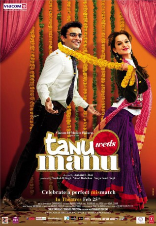

#5780 Tanu und Manu trauen sich
 
 IMDB-Wertung: 6.7 / 10
IMDB-Wertung: 6.7 / 10  Metascore: 0
Metascore: 0 
Der brave Manu kommt von London nach Indien, um gemäß dem Wunsch seiner Eltern eine ihm unbekannte, aber von den Erzeugern bereits vor langer Zeit ausgesuchte Dame zu freien. Zum Glück hat Tanu genauso wenig Lust darauf wie Manu und längst einen eigenen Freund, was Manu dann aber doch ein wenig kränkt, zumal ihm Tanu nicht schlecht gefiele. Kurz darauf heiratet ein guter Freund von Manu. Unter den Gästen auf der Hochzeit befindet sich auch Tanu. Manu wagt einen zweiten Anlauf, aber sein missgünstiger Rivale ist auf der Hut.
Jahr: 2011
Dauer: 114 Minuten
FSK:
Land: Indien Studio: Bohra Bros ProductionsTonspuren:
Untertitel:
Auflösung: SD (576x240) Größe: 1095 MB
Genre: Drama, Komödie, Liebe
Regisseur: Aanand L. Rai
Drehbuch: John Michael McDonagh
Soundtrack:
Darsteller:
- Madhavan als Manoj 'Manu' K. Sharma
- Kangana Ranaut als Tanuja 'Tanu' R. Trivedi
- Jimmy Shergill als Raja Awasthi
- Deepak Dobriyal als Pappi Tiwari
- Swara Bhaskar als Payal Sinha
- Eijaz Khan als Jaspreet Singh Jassi
- K.K. Raina als Kishan Sharma
- Rajendra Gupta als Rajendra Trivedi
- Navni Parihar als Radha R. Trivedi
- Ravi Kishan als Raja's friend
- Dipti Mishra als Anju K. Sharma
- Rahul Chahan als Chacha
Datei: X:\2-Dilogie(N-Z)\Tanu und Manu\Tanu und Manu trauen sich (2011, FSK, 576x240).avi seit 20.03.2017
Festplatte: HD Collection-2(A-Z)-3(A-M)
 Alle Filme aus Gruppe '2-Dilogie(N-Z)\Tanu und Manu'
Alle Filme aus Gruppe '2-Dilogie(N-Z)\Tanu und Manu'